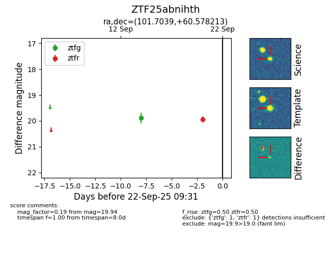

FINK: ZTF25abnihth
Lasair: ZTF25abnihth
ALeRCE: ZTF25abnihth
ZTF25abnihth (ztf,fink)
equatorial (ra, dec) = (101.7039,+60.57821)
galactic (l, b) = (155.1382,+22.85232)

last ztfg=19.89, ztfr=19.94
1 ztfg, 1 ztfr detections